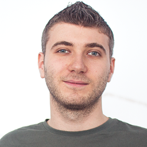
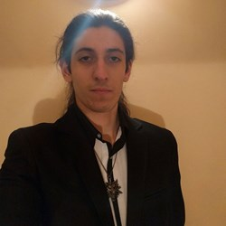
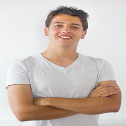

Светлин Наков

Светлин Наков има над 15-годишен опит като софтуерен инженер, мениджър на софтуерни проекти,
консултант, лектор и предприемач с богат опит в .NET and Java EE platforms, информационни системи,
бази данни, уеб разработка и софтуерно инженерство. Той е автор на 7 книги за компютърно програмиране
и софтуерни технологии, C# и Java, както и на десетки технически и научни публикации. Светлин е бил
гост-лектор на стотици конференции, семинари, курсове и други обучения. Той има докторска степен в
областта на компютърните науки, както и медали от Международни олимпиади по Информатика (МОИ).
Светлин е носител на Наградата на Президента на Република България “Джон Атанасов”. Той също така има
опит като хоноруван преподавател по компютърни науки в СУ “Св. Климент Охридски”, НБУ и ТУ София.
Светлин Наков е участвал като главна движеща сила за създаването и изграждането на най-големия
обучителен център за софтуерни инженери в България - Софтуерната академия на Телерик. Там той е
преподавал на хиляди млади хора в области като компютърни науки, софтуер разработка и информационни
технологии. Още информация: http://www.nakov.com.
Ангел Георгиев

Ангел Георгиев има близо 10 годишен опит като лектор, технически трейнър и продуктов презентатор за
големи технологични компании. Водил е продуктови обучения в Европа, САЩ и Азия. Отговарял е за
портфолиото и продуктовото позициониране в Sony Ericsson, Samsung и Sony. В последните 4 години се
занимава с програмиране, предимно със C#, Java и JavaScript. Ангел успешно съчетава опита си в
програмирането и обученията, като отговаря за учебния план, лекторския екип и административната част в
СофтУни. В свободното си време създава технологични работилници за деца във всички възрасти за
Hackidemia Bulgaria.
Иван Йонков

Иван Йонков се занимава професионално в сферата на IT от 2011 г. Работил е като QA и Developer в
XS Software - една от най-големите български компании, занимаващи се с онлайн браузър базирани игри.
Завършил е първото издание на Софтуерния Университет с пълно отличие и първи места във всички
дисциплини от Back-end модула. Иван има опит като лектор по различни дисциплини в Софтуерния
университет, включващи диапазон от основи на програмирането до по-напреднали или специализирани
курсове, като бази данни и качествено осигуряване на софтуера. В свободното си време отговаря на
въпроси в Stack Overflow.
Симеон Шейтанов

Симеон започва да се занимава с програмиране в 6 клас, запален от компютърните игри.
Завърша 12 клас с отлична диплома и трета квалификационна степен "Системен програмист" от ПГТК.
Работил е по няколко проекта с приятели и колеги от СофтУни и заради топ резултати е избран за
стипендиант в СофтУни, а по-късно и за лектор.
Георги Стоименов

Георги отскоро се занимава с програмиране, но то много бързо се превръща в негова страст и той много
скоро започва да отделя часове всеки ден, за да подобри познанията си в областта. Предизвикан от
собственото си любопитство и желание за самоусъвършенстване, той използва и търси най-различни
източници, за да постигне това. Георги бива избран за стипендиант в СофтУни, а впоследствие и за лектор.